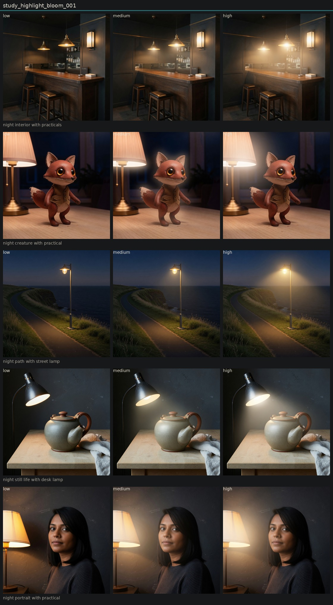

Controlled variation of highlight bloom
Hold subject via locked anchor images. image_edit each anchor to low, medium, and high of one candidate. Do not change other dimensions on purpose.
High is a pale, broader glow around existing bright regions. Not a red lamp-lip. Same practicals. Distinct from honest halation on portrait, landscape, and bar.

night portrait with practical
night still life with desk lamp
night interior with practicals
night path with street lamp
night creature with practical
Entanglement
- Bar bloom can read as atmospheric haze between pendants.
Next
- Bloom versus final bloom versus veiling glare if a finishing layer is needed.